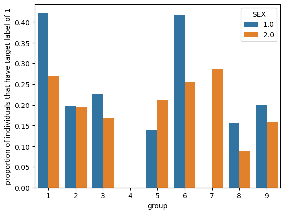
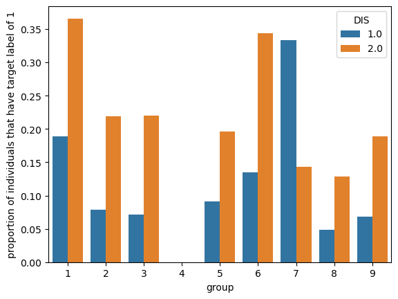

from folktables import ACSDataSource, ACSEmployment, BasicProblem, adult_filter
import numpy as np
import seaborn as snsIntroduction
In this blog post I will implement a machine learning model that predicts whether an individual’s income is over 50k on the basis of demographics excluding sex. I will also audit for gender bias
Imports
Building a Model
For this model we will be looking at PUMS data for the state of New Jersey. We also need to change the PINCP column values. Currently, the values represent the total income of the individual. Now we need it to represent 0 if the individual’s income was atleast $50,000 and 0 if it was less.
STATE = "NJ"
data_source = ACSDataSource(survey_year='2018',
horizon='1-Year',
survey='person')
acs_data = data_source.get_data(states=[STATE], download=True)
acs_data.loc[acs_data.PINCP <50000,"PINCP"]=0
acs_data.loc[acs_data.PINCP >=50000,"PINCP"]=1
# acs_data.head()This data set includes many features/ columns so we will be narrowing them down to a smaller subset of feeatures to consider
possible_features=['AGEP', 'SCHL', 'MAR', 'RELP', 'DIS', 'ESP', 'CIT', 'MIG', 'MIL', 'ANC', 'NATIVITY', 'DEAR', 'DEYE', 'DREM', 'SEX',"PINCP", 'RAC1P', 'ESR']
acs_data[possible_features].head()| AGEP | SCHL | MAR | RELP | DIS | ESP | CIT | MIG | MIL | ANC | NATIVITY | DEAR | DEYE | DREM | SEX | PINCP | RAC1P | ESR | |
|---|---|---|---|---|---|---|---|---|---|---|---|---|---|---|---|---|---|---|
| 0 | 23 | 21.0 | 5 | 17 | 2 | NaN | 5 | 2.0 | 4.0 | 1 | 2 | 2 | 2 | 2.0 | 1 | 0.0 | 6 | 6.0 |
| 1 | 51 | 20.0 | 4 | 17 | 2 | NaN | 4 | 1.0 | 4.0 | 1 | 2 | 2 | 2 | 2.0 | 1 | 0.0 | 1 | 1.0 |
| 2 | 69 | 19.0 | 3 | 16 | 1 | NaN | 1 | 1.0 | 4.0 | 4 | 1 | 2 | 2 | 2.0 | 1 | 0.0 | 1 | 6.0 |
| 3 | 18 | 16.0 | 5 | 16 | 1 | NaN | 1 | 1.0 | 4.0 | 2 | 1 | 2 | 2 | 1.0 | 2 | 0.0 | 9 | 6.0 |
| 4 | 89 | 19.0 | 2 | 16 | 1 | NaN | 1 | 1.0 | 4.0 | 4 | 1 | 2 | 2 | 1.0 | 2 | 0.0 | 1 | 6.0 |
subsetting the features:
features_to_use = [f for f in possible_features if f not in ["ESR", "RAC1P"]]Now we construct a basic problem to express our wish to use these features to predict if income (PINCP) >=$50,000 , using the race RAC1P as the group label
EmploymentProblem = BasicProblem(
features=features_to_use,
target='PINCP',
target_transform=lambda x: x == 1,
group='RAC1P',
preprocess=lambda x: x,
postprocess=lambda x: np.nan_to_num(x, -1),
)
features, label, group = EmploymentProblem.df_to_numpy(acs_data)The result is a features matrix, a label vector and a group label vector
for obj in [features, label, group]:
print(obj.shape)(88586, 16)
(88586,)
(88586,)We should perform a train-test split to split our data into training and testing subsets
from sklearn.model_selection import train_test_split
X_train, X_test, y_train, y_test, group_train, group_test = train_test_split(
features, label, group, test_size=0.2, random_state=0)Now we build our model using
from sklearn.svm import SVC
from sklearn.linear_model import LogisticRegression
from sklearn.pipeline import make_pipeline
from sklearn.preprocessing import StandardScaler
from sklearn.metrics import confusion_matrix
model = make_pipeline(StandardScaler(), SVC(gamma='auto'))
model.fit(X_train, y_train)Pipeline(steps=[('standardscaler', StandardScaler()),
('svc', SVC(gamma='auto'))])In a Jupyter environment, please rerun this cell to show the HTML representation or trust the notebook. On GitHub, the HTML representation is unable to render, please try loading this page with nbviewer.org.
Pipeline(steps=[('standardscaler', StandardScaler()),
('svc', SVC(gamma='auto'))])StandardScaler()
SVC(gamma='auto')
We can now generate predictions:
y_hat = model.predict(X_test)The overall accuracy in predicting whether someone had an income of at least $50,000 is:
(y_hat == y_test).mean()1.0The accuracy for white individuals is
(y_hat == y_test)[group_test ==1].mean()1.0(y_hat == y_test)[group_test == 2].mean()1.0Basic descriptives
import pandas as pd
df = pd.DataFrame(X_train, columns = features_to_use)
df["group"] = group_train
df["label"] = y_train
df| AGEP | SCHL | MAR | RELP | DIS | ESP | CIT | MIG | MIL | ANC | NATIVITY | DEAR | DEYE | DREM | SEX | PINCP | group | label | |
|---|---|---|---|---|---|---|---|---|---|---|---|---|---|---|---|---|---|---|
| 0 | 31.0 | 14.0 | 5.0 | 0.0 | 2.0 | 0.0 | 2.0 | 3.0 | 4.0 | 1.0 | 1.0 | 2.0 | 2.0 | 2.0 | 2.0 | 0.0 | 1 | False |
| 1 | 40.0 | 21.0 | 1.0 | 1.0 | 2.0 | 0.0 | 5.0 | 1.0 | 4.0 | 1.0 | 2.0 | 2.0 | 2.0 | 2.0 | 2.0 | 0.0 | 6 | False |
| 2 | 40.0 | 22.0 | 1.0 | 0.0 | 2.0 | 0.0 | 5.0 | 1.0 | 4.0 | 1.0 | 2.0 | 2.0 | 2.0 | 2.0 | 1.0 | 1.0 | 6 | True |
| 3 | 34.0 | 21.0 | 1.0 | 1.0 | 2.0 | 0.0 | 1.0 | 3.0 | 4.0 | 2.0 | 1.0 | 2.0 | 2.0 | 2.0 | 2.0 | 1.0 | 1 | True |
| 4 | 75.0 | 20.0 | 5.0 | 0.0 | 1.0 | 0.0 | 1.0 | 1.0 | 4.0 | 1.0 | 1.0 | 2.0 | 2.0 | 2.0 | 2.0 | 0.0 | 1 | False |
| ... | ... | ... | ... | ... | ... | ... | ... | ... | ... | ... | ... | ... | ... | ... | ... | ... | ... | ... |
| 70863 | 66.0 | 21.0 | 4.0 | 0.0 | 2.0 | 0.0 | 1.0 | 1.0 | 4.0 | 2.0 | 1.0 | 2.0 | 2.0 | 2.0 | 2.0 | 0.0 | 1 | False |
| 70864 | 32.0 | 16.0 | 5.0 | 2.0 | 2.0 | 0.0 | 1.0 | 1.0 | 4.0 | 2.0 | 1.0 | 2.0 | 2.0 | 2.0 | 1.0 | 0.0 | 1 | False |
| 70865 | 54.0 | 22.0 | 1.0 | 0.0 | 2.0 | 0.0 | 1.0 | 1.0 | 4.0 | 1.0 | 1.0 | 2.0 | 2.0 | 2.0 | 1.0 | 1.0 | 1 | True |
| 70866 | 42.0 | 19.0 | 1.0 | 0.0 | 2.0 | 0.0 | 1.0 | 1.0 | 4.0 | 1.0 | 1.0 | 2.0 | 2.0 | 2.0 | 1.0 | 0.0 | 1 | False |
| 70867 | 38.0 | 14.0 | 5.0 | 0.0 | 2.0 | 0.0 | 1.0 | 1.0 | 4.0 | 1.0 | 1.0 | 2.0 | 2.0 | 2.0 | 2.0 | 0.0 | 2 | False |
70868 rows × 18 columns
There are 70868 individuals in the data. Now lets look at what proportion have the target label equal to 1
(df["label"]==1).mean()0.312073150081842331.2% of the data has a target label of 1 meaning 31.2% of the individuals had a total income of at least $50,000. Now, let’s check how many people are in each of the groups. The distribution is as follows:
df["group"].value_counts()1 51004
2 7419
6 7230
8 3233
9 1780
3 114
5 62
7 24
4 2
Name: group, dtype: int64Now we will look at what proportion of individuals have the target label equal to 1. The distribution values are below
df.groupby(["group"])["label"].mean()group
1 0.343228
2 0.196253
3 0.201754
4 0.000000
5 0.177419
6 0.332642
7 0.166667
8 0.121250
9 0.179213
Name: label, dtype: float64Now we will look at intersectional trends
means = df.groupby(["group","SEX"])["label"].mean().reset_index(name = "proportion of individuals that have target label of 1")p = sns.barplot(data = means, x = "group", y = "proportion of individuals that have target label of 1", hue = "SEX")
There doesn’t look seem to be any trends between sex and group.
means = df.groupby(["group","DIS"])["label"].mean().reset_index(name = "proportion of individuals that have target label of 1")p = sns.barplot(data = means, x = "group", y = "proportion of individuals that have target label of 1", hue = "DIS")
For the most groups, there is a correlation between an income over $50,000 and disability status